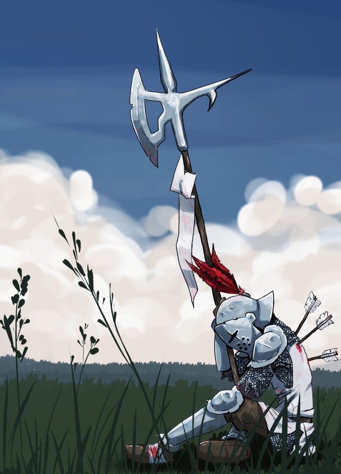
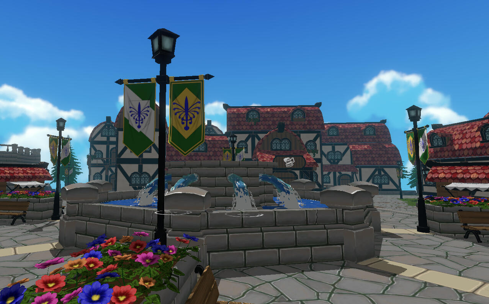
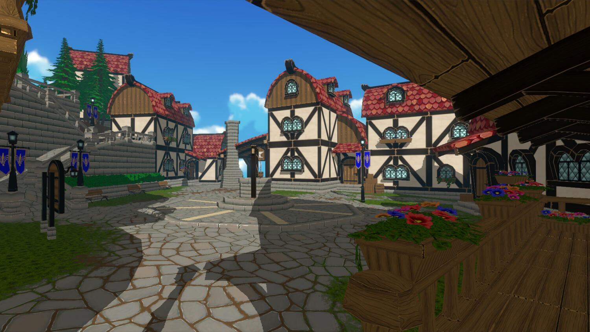

Raul Gutierrez
Artista, Designer, Game Dev e Streamer
Olá, me chamo Raul, conhecido online por Raulzilla ou Dogão, sou formado em Design Gráfico, adoro fazer artes ilustrativas, modelos 3D, animações e jogos. Participo de um pequeno estúdio de jogos independentes chamado Estúdio Raed Wulf, fundado por mim e outros dois amigos. Também faço lives na twitch.tv 4 vezes por semana.


Estúdio Raed Wulf
Somos um pequeno estúdio independente de desenvolvimento de jogos situado em Curitiba - PR.
Somos uma equipe de apenas 3 entusiastas com grandes sonhos e vontade de mudar o cenário nacional de games, focando apenas no entretenimento de nosso público.
Live Streams
DogworksTV:
Podcast - Terça-Feira - 20:00 às 22:00
Gameplay - Quarta-Feira - 20:00 às 00:00
Gameplay / RPG - Sexta-Feira - 20:00 às 00:00
JaulaHub:
Gamplay - Segunda-Feira - 20:00 às 22:00
Projeto Futuro
Aunoh
Aunoh é um RPG Online onde o foco do jogo é a liberdade do jogador criar seu personagem como quiser (dentro dos parâmetros do jogo) e viver nesse mundo fantasioso feito por ilhas voadoras.
Nosso projeto mais ambicioso até o momento, uma tentativa de trazer de volta a experiência dos RPGs Online do início dos anos 2000, porém com gameplay e gráficos mais modernos.
Não há previsão de lançamento ainda.
